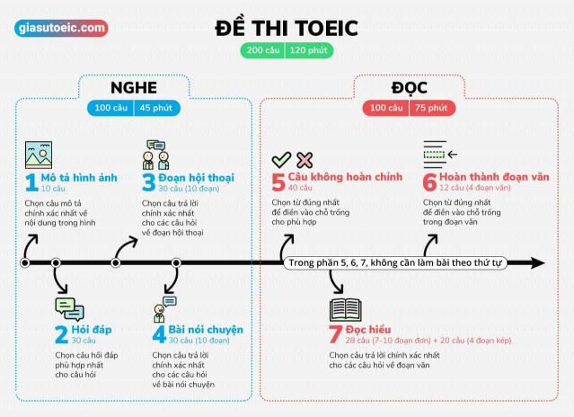

Đi thi Toeic mà không biết cấu trúc đề thi Toeic là gì thì cứ như đi đánh trận mà không biết kẻ thù là ai vậy. Nếu muốn đạt được điểm cao trong kỳ thi Toeic thì ta phải biết được cấu trúc đề thi Toeic là gì để từ đó lên được chiến lược học và luyện thi Toeic hiệu quả chứ nhỉ  Theo lời ông bà dặn thì "Biết người biết ta, trăm trận thắng", bài viết này sẽ giới thiệu cho các bạn tổng quát về cấu trúc đề thi TOEIC mới nhất, đang được dùng ở Việt Nam ở thời điểm hiện tại.
Theo lời ông bà dặn thì "Biết người biết ta, trăm trận thắng", bài viết này sẽ giới thiệu cho các bạn tổng quát về cấu trúc đề thi TOEIC mới nhất, đang được dùng ở Việt Nam ở thời điểm hiện tại.

Cấu trúc đề thi TOEIC
Đề thi Toeic gồm 2 phần là Listening (nghe hiểu) và Reading (đọc hiểu), với mỗi phần gồm 100 câu trắc nghiệm. Thời gian làm bài là 45 phút cho Listening và 75 phút cho Reading. Như vậy, tổng thời gian làm bài là 2 tiếng cho 200 câu hỏi trắc nghiệm.

Tổng điểm tối đa cho mỗi phần thi là 495 điểm. Vậy nghĩa là điểm tối đa cho cả bài thi TOEIC là 990 chứ không phải 1000 như nhiều bạn lầm tưởng. Cách tính điểm TOEIC dựa trên các câu đúng rồi quy thành điểm tương ứng, không trừ điểm cho những câu sai. Các bạn muốn hiểu rõ về cách tính điểm TOEIC để có kế hoạch luyện thi TOEIC phù hợp hay để biết mình có nên luyện thi TOEIC cấp tốc hay không thì có thể đọc bài về Thang điểm Toeic - Cách quy đổi điểm Toeic nhé!
Cấu trúc bài Listening của đề thi TOEIC
Phần Listening (Nghe hiểu): gồm 4 phần (từ Part 1 đến Part 4) với 100 câu làm trong 45 phút. Thí sinh lần lượt nghe từ Part 1 đến Part 4. Khi kết thúc phần Listening bạn sẽ được thông báo.
Khác với nhiều kỳ thi khác, giọng đọc trong phần này là của các nước nói tiếng Anh, trải đều từ Mỹ, Canada, Anh đến cả Úc và New Zealand. Do đó mà để làm tốt phần Listening, trong quá trình luyện thi Toeic, bạn phải chịu khó luyện nghe thêm cả giọng Anh và Úc thì mới tự tin làm bài được.
| Phần Listening | Nội dung | Số câu | Mô tả chi tiết |
|---|---|---|---|
| Phần 1 | Mô Tả Hình Ảnh | 10 |
Bạn sẽ xem một bức hình → Nghe 4 câu A, B, C, D → Chọn một câu mô tả chính xác nhất nội dung có trong hình. Thời gian dừng giữa 2 câu là 5 giây. |
| Phần 2 | Hỏi - Đáp | 30 |
Bạn sẽ nghe một câu hỏi hoặc một câu nói → Nghe tiếp 3 câu trả lời / hồi đáp lại câu trên (tương ứng với 3 lựa chọn A, B, C) → Chọn một câu hồi đáp phù hợp nhất cho câu hỏi. Thời gian dừng giữa 2 câu là 5 giây. |
| Phần 3 | Đoạn Hội Thoại | 30 (ứng với 10 đoạn hội thoại) |
Bạn sẽ lắng nghe các đoạn hội thoại ngắn giữa hai người → Với mỗi đoạn sẽ có 3 câu hỏi, mỗi câu hỏi có 4 lựa chọn A, B, C, D. Bạn đọc câu hỏi và chọn câu trả lời phù hợp nhất cho câu hỏi. Thời gian dừng giữa mỗi câu hỏi là 8 giây. |
| Phần 4 |
Bài Nói Chuyện Ngắn (độc thoại) |
30 (ứng với 10 bài độc thoại) |
Bạn sẽ lắng nghe các bài nói chuyện ngắn (độc thoại) → Với mỗi đoạn sẽ có 3 câu hỏi, mỗi câu hỏi có 4 lựa chọn A, B, C, D. Bạn đọc câu hỏi và chọn câu trả lời phù hợp nhất cho câu hỏi. Thời gian dừng giữa mỗi câu hỏi là 8 giây. |
Cấu trúc bài Reading của đề thi TOEIC
Phần Reading (Đọc hiểu): gồm 3 phần (từ Part 5 đến Part 7) với 100 câu làm trong 75 phút. Dù đề thi TOEIC trình bày các câu hỏi theo thứ tự từ Part 5 đến Part 7 nhưng trong phần Reading, thí sinh có thể làm bất cứ câu nào trước cũng được.
| Phần Reading | Nội dung | Số câu | Mô tả chi tiết |
|---|---|---|---|
| Phần 5 | Câu Không Hoàn Chỉnh | 40 |
Bạn sẽ được cho một câu có một chỗ trống → Chọn một đáp án phù hợp nhất để điền vào chỗ trống. |
| Phần 6 | Hoàn Thành Đoạn Văn | 12 (ứng với 4 đoạn văn) |
Bạn sẽ được cho một đoạn văn có nhiều chỗ trống → Chọn một đáp án phù hợp nhất để điền vào chỗ trống. |
| Phần 7 | Đọc Hiểu: Đoạn Đơn | 28 |
Bạn sẽ được cho từ 7 đến 10 bài đọc với mỗi bài gồm 1 đoạn văn. Số lượng câu hỏi cho mỗi bài đọc dao động từ 2 đến 5 câu → Bạn đọc câu hỏi và chọn câu trả lời phù hợp nhất cho câu hỏi. |
| Đọc Hiểu: Đoạn Kép | 20 |
Bạn sẽ được cho 4 bài đọc với mỗi bài gồm 2 đoạn văn. Mỗi bài đọc có 5 câu hỏi. → Bạn đọc câu hỏi và chọn câu trả lời phù hợp nhất cho câu hỏi. |
Một số ghi chú
Như vậy là, mỗi câu hỏi trong đề thi TOEIC bao gồm 4 lựa chọn là A - B - C - D, riêng Phần 2 thuộc Listening chỉ có 3 lựa chọn. Thí sinh không được làm trên giấy thi mà sẽ đánh dấu câu trả lời trên Phiếu trả lời (Answer Sheet) tách biệt với đề thi bằng cách dùng bút chì tô vào đáp án mình chọn.
Lưu ý là các bạn phải dùng bút chì 2B, không được dùng viết mực hoặc bút chì loại khác để làm bài. Viết chì kèm gôm tẩy sẽ được phát trước khi vào phòng thi nên các bạn không cần phải chuẩn bị trước.
Còn để hiểu rõ hơn mỗi phần thi chủ yếu kiểm tra kỹ năng nào, các bạn có thể xem loạt bài viết Phân tích đề thi Toeic của Gia sư Toeic.
Những tình huống có thể có trong bài thi TOEIC
Như đã đề cập ở bài TOEIC là gì, nội dung đề thi TOEIC sẽ xoay quanh những kiến thức, những tình huống đời thường và ở môi trường công sở.
Phát triển kinh doanh: nghiên cứu, phát triển sản phẩm
Ăn ngoài: các bữa ăn với đối tác và với người thân, tiệc lớn, tiệc chiêu đã, đặt chỗ ở nhà hàng.
Giải trí: rạp chiếu phim, rạp hát, âm nhạc, nghệ thuật, các cuộc triển lãm, bảo tàng, truyền thông
Tài chính và Dự thảo ngân sách: ngân hàng, đầu tư, thuế, kế toán, lập hóa đơn
Các tình huống công sở thường gặp: bàn về hợp đồng, đàm phán, hợp nhất (hai công ty, doanh nghiệp), marketing, sales, giấy bảo hành, bàn kế hoạch kinh doanh, hội thảo, tuyển dụng
Y tế: bảo hiểm y tế, đi khám bác sĩ, nha sĩ, ở trạm xá, bệnh viện
Bất động sản: xây dựng, mua bán và cho thuê, các dịch vụ điện nước ga
Sản xuất: dây chuyền sản xuất, kế hoạch xây dựng, kiểm soát chất lượng
Văn phòng: họp hội đồng, ủy ban, thư từ, thư báo, tin nhắn qua điện thoại, fax, email, vật dụng và nội thất văn phòng, các quy định công sở
Nhân lực: tuyển dụng, về hưu, lương bổng, thăng chức, nộp đơn xin việc, đăng thông tin tuyển dụng, lương hưu, thưởng
Mua hàng: shopping, đặt hàng, chuyển hàng, xuất hóa đơn
Các lĩnh vực kỹ thuật: điện, công nghệ, máy tính, các thiết bị phòng lab, các chi tiết, tiêu chuẩn kỹ thuật
Du lịch: tàu lửa, máy bay, taxi, bus, tàu, phà, vé, lịch trình, các thông báo ở sân ga và sân bay, thuê xe hơi, khách sạn, đặt chỗ, hoãn và hủy đặt chỗ.
Vì đề thi TOEIC chủ yếu bao gồm những tình huống đời thường và ở môi trường công sở, nên trong quá trình ôn luyện, các bạn không cần phải đọc những sách báo hay tài liệu quá cao siêu như để luyện TOEFL hay IELTS. Các bạn có thể chọn xem những TV series sitcom về cuộc sống thường ngày, điển hình nhất là series Friends, vốn rất quen thuộc với các bạn.
(Nếu muốn mở rộng vốn từ vựng tiếng Anh nói chung, bạn có thể tham khảo trang LeeRit).
Hi vọng bài viết đã giúp bạn hiểu rõ cấu trúc đề thi Toeic, cũng như nội dung của 7 phần và các tình huống thường xuyên xuất hiện trong đề thi. Vậy hãy cùng bắt tay vào việc luyện thi TOEIC thôi!
Ngoài ra, bạn có thể đọc thêm:
- TOEIC Speaking và Writing là gì?
-
Cấu trúc đề thi TOEIC mới nhất năm 2017
(chưa áp dụng tại Việt Nam)
Chúc bạn đạt Toeic điểm cao!